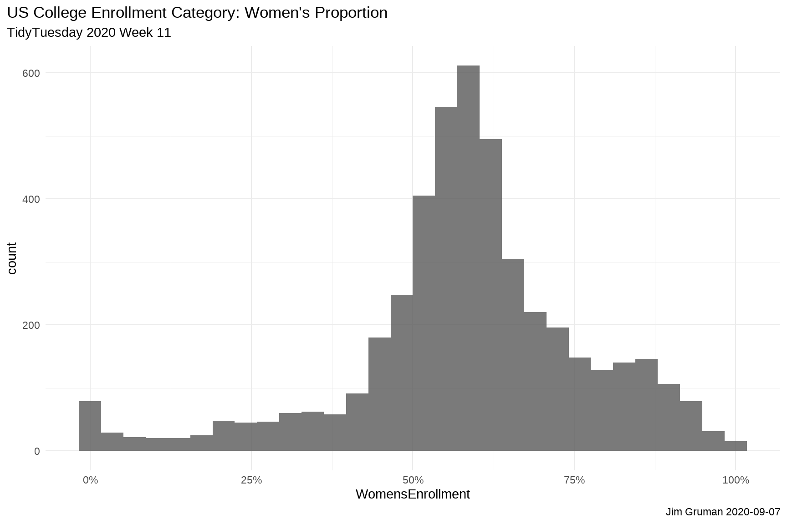
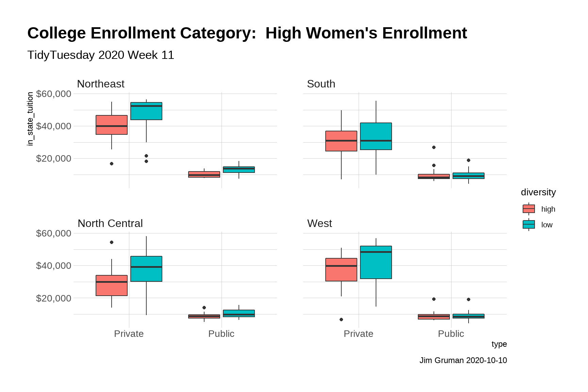
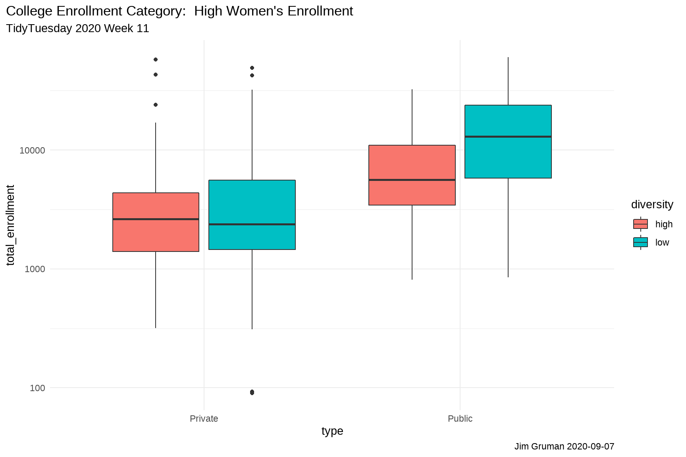
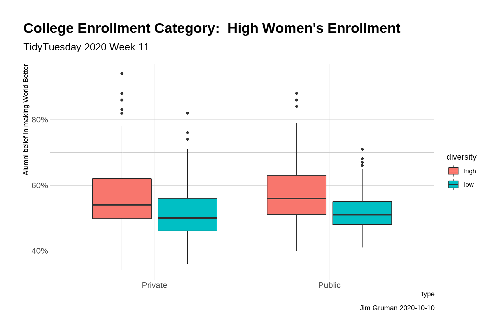
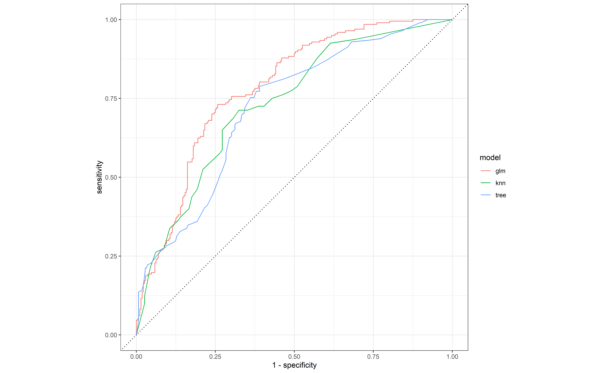
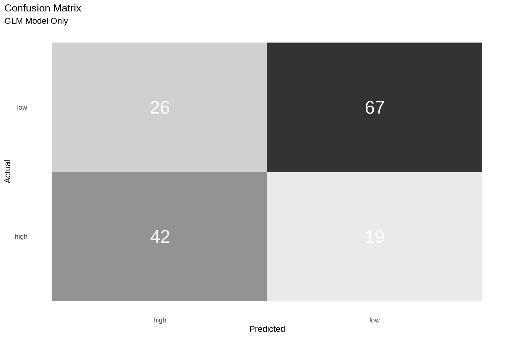

College Tuition and Diversity
Jim Gruman
March 10, 2020
Last updated: 2020-09-07
Checks: 7 0
Knit directory: myTidyTuesday/
This reproducible R Markdown analysis was created with workflowr (version 1.6.2). The Checks tab describes the reproducibility checks that were applied when the results were created. The Past versions tab lists the development history.
Great! Since the R Markdown file has been committed to the Git repository, you know the exact version of the code that produced these results.
Great job! The global environment was empty. Objects defined in the global environment can affect the analysis in your R Markdown file in unknown ways. For reproduciblity it’s best to always run the code in an empty environment.
The command set.seed(20200907) was run prior to running the code in the R Markdown file. Setting a seed ensures that any results that rely on randomness, e.g. subsampling or permutations, are reproducible.
Great job! Recording the operating system, R version, and package versions is critical for reproducibility.
Nice! There were no cached chunks for this analysis, so you can be confident that you successfully produced the results during this run.
Great job! Using relative paths to the files within your workflowr project makes it easier to run your code on other machines.
Great! You are using Git for version control. Tracking code development and connecting the code version to the results is critical for reproducibility.
The results in this page were generated with repository version aa8536e. See the Past versions tab to see a history of the changes made to the R Markdown and HTML files.
Note that you need to be careful to ensure that all relevant files for the analysis have been committed to Git prior to generating the results (you can use wflow_publish or wflow_git_commit). workflowr only checks the R Markdown file, but you know if there are other scripts or data files that it depends on. Below is the status of the Git repository when the results were generated:
Ignored files:
Ignored: .Rhistory
Ignored: .Rproj.user/
Untracked files:
Untracked: analysis/Astronaut.Rmd
Untracked: analysis/BeerProduction.Rmd
Untracked: analysis/Coffee.Rmd
Untracked: analysis/StudentDebt.Rmd
Untracked: analysis/TheOffice.Rmd
Untracked: code/BrainInjuryCleaningScript.R
Untracked: code/caribou.R
Untracked: code/studentdebt.R
Untracked: figure/BrainInjury.Rmd/
Untracked: figure/NFL attendance.Rmd/
Untracked: figure/TourDeFrance.Rmd/
Unstaged changes:
Modified: analysis/GDPRfines.Rmd
Modified: analysis/index.Rmd
Note that any generated files, e.g. HTML, png, CSS, etc., are not included in this status report because it is ok for generated content to have uncommitted changes.
These are the previous versions of the repository in which changes were made to the R Markdown (analysis/CollegeTuitionandDiversity.Rmd) and HTML (docs/CollegeTuitionandDiversity.html) files. If you’ve configured a remote Git repository (see ?wflow_git_remote), click on the hyperlinks in the table below to view the files as they were in that past version.
| File | Version | Author | Date | Message |
|---|---|---|---|---|
| Rmd | aa8536e | opus1993 | 2020-09-07 | wflow_publish(“analysis/CollegeTuitionandDiversity.Rmd”) |
TidyTuesday 2020 Week 11

Topic: College tuition, diversity, and salary outcomes
# Get the data
tuition_cost <- readr::read_csv('https://raw.githubusercontent.com/rfordatascience/tidytuesday/master/data/2020/2020-03-10/tuition_cost.csv')
tuition_income <- readr::read_csv('https://raw.githubusercontent.com/rfordatascience/tidytuesday/master/data/2020/2020-03-10/tuition_income.csv')
salary_potential <- readr::read_csv('https://raw.githubusercontent.com/rfordatascience/tidytuesday/master/data/2020/2020-03-10/salary_potential.csv')
historical_tuition <- readr::read_csv('https://raw.githubusercontent.com/rfordatascience/tidytuesday/master/data/2020/2020-03-10/historical_tuition.csv')
diversity_school <- readr::read_csv('https://raw.githubusercontent.com/rfordatascience/tidytuesday/master/data/2020/2020-03-10/diversity_school.csv')What are the characteristics of schools that enroll and graduate more women?
diversity_gender<-diversity_school %>%
filter(category == "Women")%>%
mutate(WomensEnrollment = enrollment / total_enrollment)
diversity_gender %>%
ggplot(aes(WomensEnrollment))+
geom_histogram(alpha = 0.8)+
labs(title = "US College Enrollment Category: Women's Proportion",
subtitle = "TidyTuesday 2020 Week 11",
caption = paste0("Jim Gruman ", Sys.Date()))+
scale_x_continuous(labels=scales::percent)+
theme(plot.title.position = "plot")
median(diversity_gender$WomensEnrollment)[1] 0.586676How can we understand what drives higher proportions of enrollment of Women?
university_df<-diversity_gender %>%
transmute(diversity = case_when(WomensEnrollment > 0.586 ~ "high",
TRUE ~ "low"),
name, state, total_enrollment) %>%
inner_join(tuition_cost %>% select(name, type, degree_length,
in_state_tuition:out_of_state_total)) %>%
inner_join(salary_potential %>% select(name, make_world_better_percent, stem_percent)) %>%
left_join(tibble(state = state.name, region = state.region)) %>%
select(-state, -name) %>%
mutate_if(is.character, factor)
university_df %>%
ggplot(aes(type, in_state_tuition, fill = diversity))+
geom_boxplot()+
scale_y_continuous(labels = scales::dollar_format())+
facet_wrap(~region)+
labs(title = "College Enrollment Category: High Women's Enrollment",
subtitle = "TidyTuesday 2020 Week 11",
caption = paste0("Jim Gruman ", Sys.Date()))+
theme(plot.title.position = "plot")
university_df %>%
ggplot(aes(type, total_enrollment, fill = diversity))+
geom_boxplot()+
scale_y_log10()+
labs(title = "College Enrollment Category: High Women's Enrollment",
subtitle = "TidyTuesday 2020 Week 11",
caption = paste0("Jim Gruman ", Sys.Date()))+
theme(plot.title.position = "plot")
university_df %>%
ggplot(aes(type, make_world_better_percent/100, fill = diversity))+
geom_boxplot()+
labs(title = "College Enrollment Category: High Women's Enrollment",
subtitle = "TidyTuesday 2020 Week 11",
caption = paste0("Jim Gruman ", Sys.Date()))+
scale_y_continuous(labels = scales::percent_format())+
theme(plot.title.position = "plot")+
ylab("Alumni belief in making World Better")
skimr::skim(university_df)| Name | university_df |
| Number of rows | 640 |
| Number of columns | 11 |
| _______________________ | |
| Column type frequency: | |
| factor | 4 |
| numeric | 7 |
| ________________________ | |
| Group variables | None |
Variable type: factor
| skim_variable | n_missing | complete_rate | ordered | n_unique | top_counts |
|---|---|---|---|---|---|
| diversity | 0 | 1 | FALSE | 2 | low: 375, hig: 265 |
| type | 0 | 1 | FALSE | 2 | Pri: 398, Pub: 242 |
| degree_length | 0 | 1 | FALSE | 2 | 4 Y: 637, 2 Y: 3 |
| region | 0 | 1 | FALSE | 4 | Sou: 257, Nor: 170, Nor: 129, Wes: 84 |
Variable type: numeric
| skim_variable | n_missing | complete_rate | mean | sd | p0 | p25 | p50 | p75 | p100 | hist |
|---|---|---|---|---|---|---|---|---|---|---|
| total_enrollment | 0 | 1.00 | 7557.24 | 9286.93 | 90 | 1869.25 | 3633 | 9841.50 | 60767 | ▇▁▁▁▁ |
| in_state_tuition | 0 | 1.00 | 26780.54 | 16365.44 | 4220 | 10095.50 | 26746 | 41130.00 | 58230 | ▇▂▅▃▃ |
| in_state_total | 0 | 1.00 | 37275.52 | 18746.72 | 4258 | 19664.25 | 35654 | 53057.00 | 75003 | ▆▇▅▆▅ |
| out_of_state_tuition | 0 | 1.00 | 31059.86 | 12967.12 | 6570 | 20894.50 | 29466 | 41220.00 | 58230 | ▃▇▆▅▃ |
| out_of_state_total | 0 | 1.00 | 41554.84 | 15608.48 | 6670 | 29991.00 | 39114 | 53166.25 | 75003 | ▂▇▇▅▃ |
| make_world_better_percent | 17 | 0.97 | 53.58 | 8.80 | 34 | 48.00 | 52 | 58.00 | 94 | ▂▇▃▁▁ |
| stem_percent | 0 | 1.00 | 16.84 | 15.80 | 0 | 7.00 | 13 | 22.00 | 100 | ▇▂▁▁▁ |
Lets build several classification models, starting with pre-processing
set.seed(42)
uni_split<-initial_split(university_df, strate = diversity)
uni_train<- training(uni_split)
uni_test<- testing(uni_split)
uni_rec<-recipe(diversity ~ ., data = uni_train) %>%
step_corr(all_numeric()) %>%
step_dummy(all_nominal(), -all_outcomes()) %>%
step_zv(all_numeric()) %>%
step_normalize(all_numeric()) %>%
prep()
# The steps taken
uni_recData Recipe
Inputs:
role #variables
outcome 1
predictor 10
Training data contained 480 data points and 11 incomplete rows.
Operations:
Correlation filter removed in_state_total, ... [trained]
Dummy variables from type, degree_length, region [trained]
Zero variance filter removed no terms [trained]
Centering and scaling for total_enrollment, ... [trained]# What the data looks like after pre-processing (similar to bake)
juice(uni_rec)# A tibble: 480 x 10
total_enrollment in_state_tuition make_world_bett~ stem_percent diversity
<dbl> <dbl> <dbl> <dbl> <fct>
1 5.84 -1.25 -0.383 -0.0522 low
2 4.62 -1.24 -0.271 -0.0522 low
3 4.61 -1.25 -0.159 0.749 low
4 4.59 1.52 -1.28 0.0710 low
5 4.13 -0.718 -1.06 1.18 low
6 3.93 0.259 -0.495 -0.545 high
7 3.84 1.79 -0.719 0.379 low
8 3.82 -0.877 -0.271 0.379 low
9 3.71 -1.24 -0.495 0.0710 low
10 3.67 -0.876 -0.383 0.441 low
# ... with 470 more rows, and 5 more variables: type_Public <dbl>,
# degree_length_X4.Year <dbl>, region_South <dbl>,
# region_North.Central <dbl>, region_West <dbl>A GLM classification model, with meaningful feature coefficients:
glm_spec<-logistic_reg()%>%
set_engine("glm")
glm_fit<-glm_spec %>%
fit(diversity ~ ., data = juice(uni_rec))
glm_fitparsnip model object
Fit time: 11ms
Call: stats::glm(formula = diversity ~ ., family = stats::binomial,
data = data)
Coefficients:
(Intercept) total_enrollment
0.560544 0.412563
in_state_tuition make_world_better_percent
-0.243804 -0.441459
stem_percent type_Public
1.551035 -0.231260
degree_length_X4.Year region_South
0.753413 0.002013
region_North.Central region_West
0.292684 0.305583
Degrees of Freedom: 468 Total (i.e. Null); 459 Residual
(11 observations deleted due to missingness)
Null Deviance: 638.1
Residual Deviance: 496.5 AIC: 516.5A k-nearest neighbors model
knn_spec<-nearest_neighbor()%>%
set_engine("kknn") %>%
set_mode("classification")
knn_fit<-knn_spec %>%
fit(diversity ~ ., data = juice(uni_rec))
knn_fitparsnip model object
Fit time: 20ms
Call:
kknn::train.kknn(formula = diversity ~ ., data = data, ks = 5)
Type of response variable: nominal
Minimal misclassification: 0.3326226
Best kernel: optimal
Best k: 5An a decision tree model, with explainable branching. It is interesting to note here that the first split is on stem_percent.
tree_spec<-decision_tree()%>%
set_engine("rpart") %>%
set_mode("classification")
tree_fit<-tree_spec %>%
fit(diversity ~ ., data = juice(uni_rec))
tree_fitparsnip model object
Fit time: 20ms
n= 480
node), split, n, loss, yval, (yprob)
* denotes terminal node
1) root 480 198 low (0.41250000 0.58750000)
2) stem_percent< -0.2062361 253 99 high (0.60869565 0.39130435)
4) make_world_better_percent>=1.0187 53 9 high (0.83018868 0.16981132)
8) total_enrollment>=-0.6945882 44 3 high (0.93181818 0.06818182) *
9) total_enrollment< -0.6945882 9 3 low (0.33333333 0.66666667) *
5) make_world_better_percent< 1.0187 200 90 high (0.55000000 0.45000000)
10) make_world_better_percent>=-0.3269738 134 53 high (0.60447761 0.39552239)
20) total_enrollment>=-0.695245 126 45 high (0.64285714 0.35714286) *
21) total_enrollment< -0.695245 8 0 low (0.00000000 1.00000000) *
11) make_world_better_percent< -0.3269738 66 29 low (0.43939394 0.56060606)
22) stem_percent< -0.4526414 41 17 high (0.58536585 0.41463415)
44) in_state_tuition>=0.1424591 24 7 high (0.70833333 0.29166667) *
45) in_state_tuition< 0.1424591 17 7 low (0.41176471 0.58823529) *
23) stem_percent>=-0.4526414 25 5 low (0.20000000 0.80000000) *
3) stem_percent>=-0.2062361 227 44 low (0.19383260 0.80616740) *To measure each model, resampling is a best practice to simulate how well model performs when exposed to new data. For classification problems, the metrics available include roc_auc, sensitivity, and specificity
Evaluate models with resampling —–
We will create 10-cross validation sets
set.seed(42)
folds<-vfold_cv(juice(uni_rec), strata = diversity)
set.seed(42)
glm_rs <- glm_spec %>%
fit_resamples(diversity ~ .,
folds,
metrics = metric_set(roc_auc),
control = control_resamples(save_pred = TRUE))
# glm_rs %>% unnest(.predictions)
#glm_rs %>% unnest(.metrics)
set.seed(42)
knn_rs<-knn_spec %>%
fit_resamples(diversity ~ .,
folds,
metrics = metric_set(roc_auc),
control = control_resamples(save_pred = TRUE))
set.seed(42)
tree_rs<-tree_spec %>%
fit_resamples(diversity ~ .,
folds,
metrics = metric_set(roc_auc),
control = control_resamples(save_pred = TRUE))At a quick glance, the mean roc_auc is highest with the glm approach.
glm_rs %>% collect_metrics()# A tibble: 1 x 5
.metric .estimator mean n std_err
<chr> <chr> <dbl> <int> <dbl>
1 roc_auc binary 0.790 10 0.0210knn_rs %>% collect_metrics()# A tibble: 1 x 5
.metric .estimator mean n std_err
<chr> <chr> <dbl> <int> <dbl>
1 roc_auc binary 0.731 4 0.0281tree_rs %>% collect_metrics()# A tibble: 1 x 5
.metric .estimator mean n std_err
<chr> <chr> <dbl> <int> <dbl>
1 roc_auc binary 0.717 10 0.0184A clearer comparison of ROC curves:
glm_rs %>%
unnest(.predictions) %>%
mutate(model = "glm") %>%
bind_rows(tree_rs %>%
unnest(.predictions)%>%
mutate(model = "tree")) %>%
bind_rows(knn_rs %>%
unnest(.predictions) %>%
mutate(model = "knn")) %>%
group_by(model) %>%
roc_curve(diversity, .pred_high) %>%
autoplot()
So, choosing the glm technique, let’s have a look at the predictions with testing data.
glm_fit %>%
predict(new_data = bake(uni_rec, new_data = uni_test),
type = "prob") %>%
mutate(truth = uni_test$diversity) %>%
roc_auc(truth, .pred_high)# A tibble: 1 x 3
.metric .estimator .estimate
<chr> <chr> <dbl>
1 roc_auc binary 0.772glm_fit %>%
predict(new_data = bake(uni_rec, new_data = uni_test),
type = "class") %>%
mutate(truth = uni_test$diversity) %>%
conf_mat(truth, .pred_class)%>%
pluck(1) %>%
as_tibble() %>%
ggplot(aes(Prediction, Truth, alpha = n)) +
geom_tile(show.legend = FALSE) +
geom_text(aes(label = n), colour = "white", alpha = 1, size = 8) +
theme(panel.grid.major = element_blank(),
plot.title.position = "plot") +
labs(
y = "Actual",
x = "Predicted",
fill = NULL,
title = "Confusion Matrix",
subtitle = "GLM Model Only"
)
Acknowledgements:
sessionInfo()R version 4.0.0 (2020-04-24)
Platform: x86_64-w64-mingw32/x64 (64-bit)
Running under: Windows 10 x64 (build 19041)
Matrix products: default
locale:
[1] LC_COLLATE=English_United States.1252
[2] LC_CTYPE=English_United States.1252
[3] LC_MONETARY=English_United States.1252
[4] LC_NUMERIC=C
[5] LC_TIME=English_United States.1252
attached base packages:
[1] stats graphics grDevices utils datasets methods base
other attached packages:
[1] kknn_1.3.1 forcats_0.5.0 stringr_1.4.0 readr_1.3.1
[5] tidyverse_1.3.0 yardstick_0.0.7 workflows_0.1.3 tune_0.1.1
[9] tidyr_1.1.2 tibble_3.0.3 rsample_0.0.7 recipes_0.1.13
[13] purrr_0.3.4 parsnip_0.1.3 modeldata_0.0.2 infer_0.5.3
[17] ggplot2_3.3.2 dplyr_1.0.2 dials_0.0.8 scales_1.1.1
[21] broom_0.7.0 tidymodels_0.1.1 workflowr_1.6.2
loaded via a namespace (and not attached):
[1] colorspace_1.4-1 ellipsis_0.3.1 class_7.3-17 showtext_0.9
[5] rprojroot_1.3-2 base64enc_0.1-3 fs_1.5.0 rstudioapi_0.11
[9] showtextdb_3.0 listenv_0.8.0 furrr_0.1.0 farver_2.0.3
[13] prodlim_2019.11.13 fansi_0.4.1 lubridate_1.7.9 xml2_1.3.2
[17] codetools_0.2-16 splines_4.0.0 knitr_1.29 jsonlite_1.7.1
[21] pROC_1.16.2 dbplyr_1.4.4 compiler_4.0.0 httr_1.4.2
[25] backports_1.1.9 assertthat_0.2.1 Matrix_1.2-18 cli_2.0.2
[29] later_1.1.0.1 prettyunits_1.1.1 htmltools_0.5.0 tools_4.0.0
[33] igraph_1.2.5 gtable_0.3.0 glue_1.4.2 Rcpp_1.0.5
[37] cellranger_1.1.0 DiceDesign_1.8-1 vctrs_0.3.4 iterators_1.0.12
[41] timeDate_3043.102 gower_0.2.2 xfun_0.16 globals_0.12.5
[45] rvest_0.3.6 lifecycle_0.2.0 future_1.18.0 MASS_7.3-52
[49] ipred_0.9-9 hms_0.5.3 promises_1.1.1 parallel_4.0.0
[53] yaml_2.2.1 curl_4.3 rpart_4.1-15 stringi_1.4.6
[57] highr_0.8 foreach_1.5.0 lhs_1.0.2 hardhat_0.1.4
[61] lava_1.6.7 repr_1.1.0 rlang_0.4.7 pkgconfig_2.0.3
[65] evaluate_0.14 lattice_0.20-41 labeling_0.3 tidyselect_1.1.0
[69] plyr_1.8.6 magrittr_1.5 R6_2.4.1 generics_0.0.2
[73] DBI_1.1.0 pillar_1.4.6 haven_2.3.1 whisker_0.4
[77] withr_2.2.0 survival_3.2-3 nnet_7.3-14 modelr_0.1.8
[81] crayon_1.3.4 utf8_1.1.4 rmarkdown_2.3 sysfonts_0.8.1
[85] grid_4.0.0 readxl_1.3.1 blob_1.2.1 git2r_0.27.1
[89] reprex_0.3.0 digest_0.6.25 httpuv_1.5.4 GPfit_1.0-8
[93] munsell_0.5.0 skimr_2.1.2